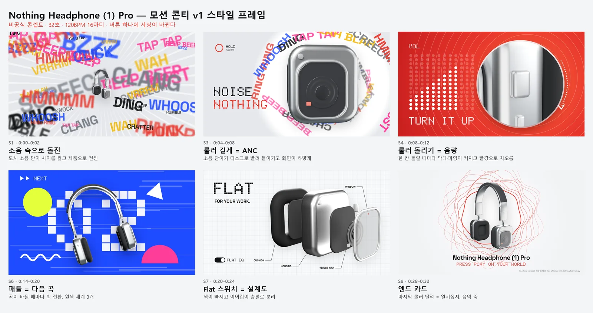
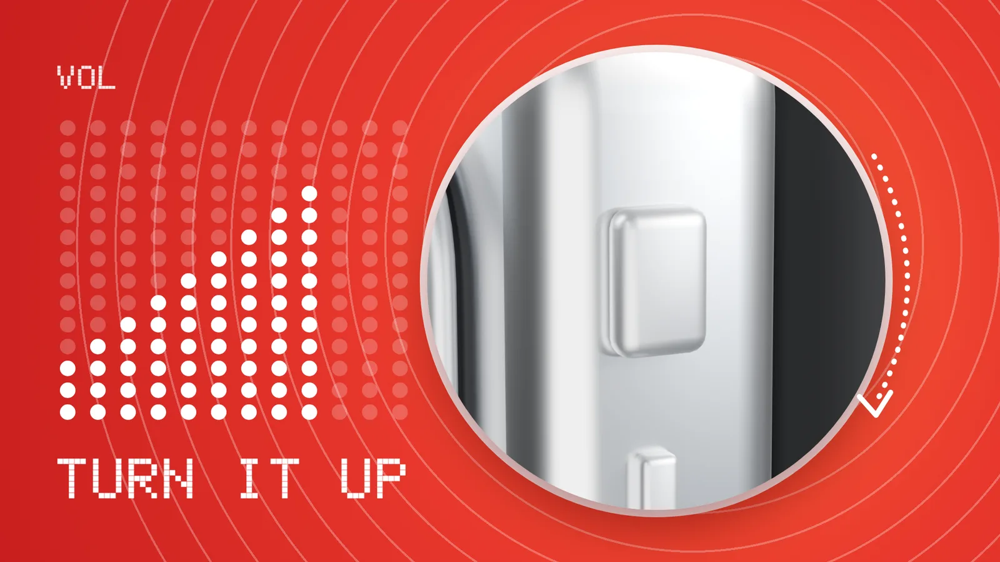
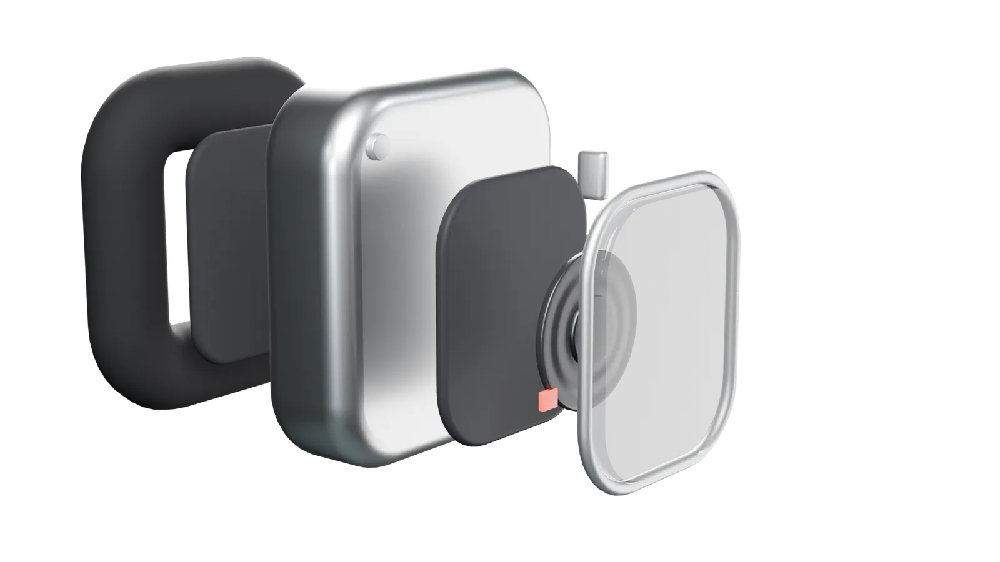
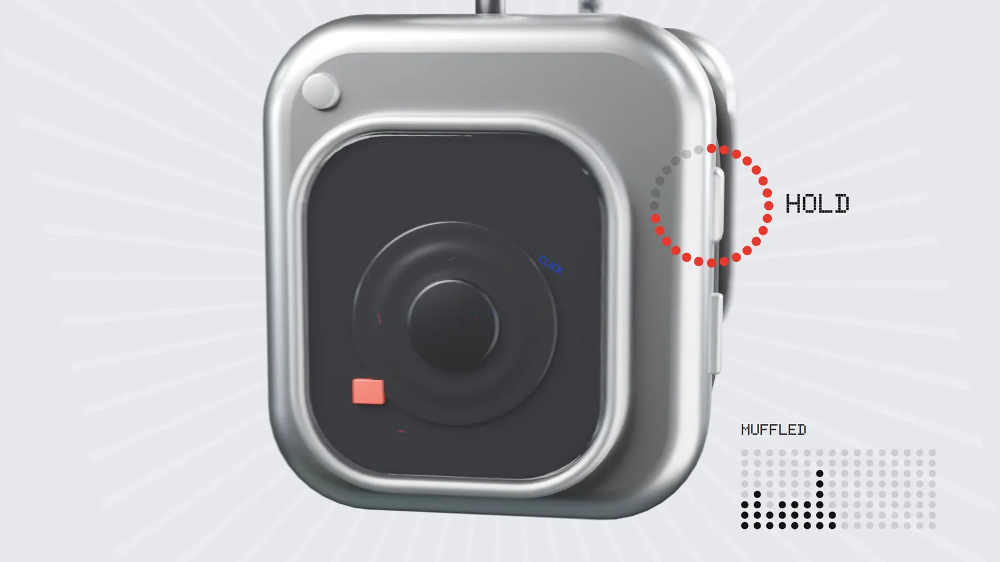

테크·가전3D·모션그래픽 광고콘티·프리비즈리듬·테크
버튼 하나에, 세상이 바뀐다
Nothing Headphone (1) Pro
롤러를 누르고, 길게 누르고, 돌리고, 패들을 밀 때마다 음악과 화면이 바뀌는 32초 모션그래픽. 재생 버튼으로 시작해 일시정지 버튼으로 끝나요.
32초 본편 · 1920×1080 · 소리 있음
32초1080p 본편 · 768프레임
9장면모두 실제 조작에서 시작
16대역소리를 따라가는 이퀄라이저
브리프
AI 실사 시안 7편이 '느리고, 장소만 바뀌고, 제품과 변화의 인과가 없다'는 이유로 거절됐다. 사람 대신 제품의 실제 조작을 주인공으로 다시 설계했다.
콘셉트
공식 매뉴얼의 조작 다섯 가지(누르기·길게·돌리기·패들·Flat 스위치)를 장면 전환의 방아쇠로. 음악 B(120BPM)의 마디에 컷을 맞췄다.

스타일 프레임

3D 제품
공식 사진 대신 Blender로 직접 모델링해 분해도·360° 회전·접사를 자유롭게 찍었다.

본편

사운드
화면 이퀄라이저가 실제 믹스의 16대역을 따라간다. 효과음은 전부 합성, 음악은 로컬 생성 모델(ACE-Step)로 만든 곡을 박자 격자 위에 재배치.
Gallery
갤러리


내가 한 일
콘셉트·콘티3D 모델링·카메라 (Blender)2D 모션그래픽 합성사운드 믹스전 프레임 검수
사용한 도구
Blender 5.1 (Cycles)HTML·SVG + 헤드리스 ChromePython (음향 믹스)ffmpegACE-Step 1.5 (음악 생성)
모든 광고는 실제 브랜드와 관계없는 개인 비공식 콘셉트 작품입니다.
NEXT
테크·가전AI 영상 광고콘티·프리비즈인물·스토리
OWN YOUR TEMPO — 실사판
Nothing Headphone (1) Pro
헤드폰을 쓴 한 사람의 하루를 20초로 담은 AI 영상 광고 시안이에요. 거리·계단·옥상, 레코드점·인쇄소·세탁소·기차·농구장까지 장소와 이야기를 바꿔 가며 7편을 만들었고, 이 과정에서 얻은 결론으로 모션그래픽 본편을 다시 만들었어요.
케이스 스터디 보기 →